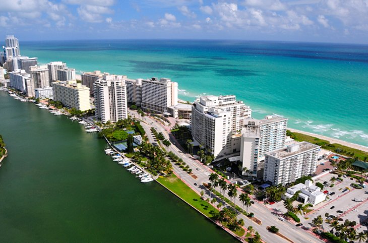
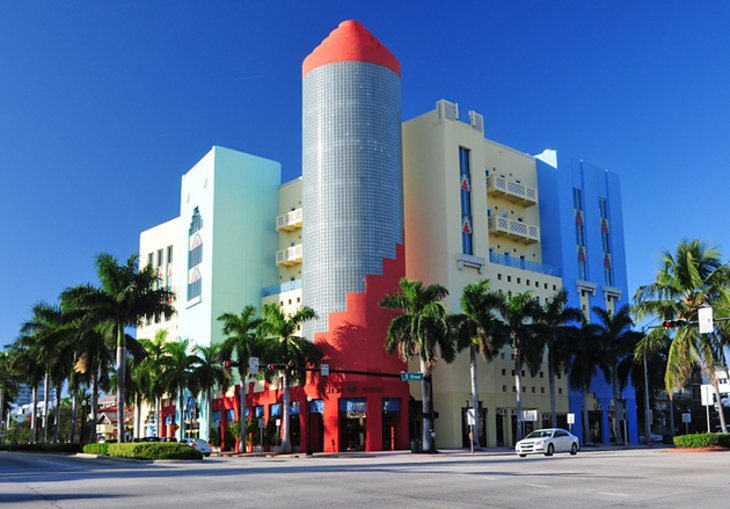

Miami, USA
Miami is a coastal city located in the state of Florida in the United States of America.
Miami is a premier vacation destinations, with beaches, great weather, history, culture,
sports, and entertainment. Downtown Miami, separated from the Atlantic Ocean by the Biscayne
Bay and Miami Beach, is a modern metropolis and cultural treasure trove.
From the museums to the streets of Little Havana, you can always find plenty of things to do.
Across the bay, Miami Beach, with its Art Deco District, fantastic stretch of beachfront,
and fun vibe, is a must-see in the area. Nearby, Everglades National Park is one of several
popular day trip destinations in Miami.
Miami Beach

Located on a barrier island and connected to the mainland by a series of bridges, Miami Beach is
a mix of quiet neighborhoods, lively entertainment-focused areas, and long stretches of soft-sand beaches.
Art Deco Historic District, with pastel buildings from the 1930s and early 1940s sporting classic neon signs,
is one of the main highlights.
Art Deco Historic District

Even if you have no interest in the beach, the Art Deco Historic District is worth a trip out to Miami Beach.
This architectural style, popular in the 1930s and 40s, dominates the trendy South Beach neighbourhood.
These uniquely designed buildings, in arange of pastel colors and displaying large neon signs, were built
following a devastating hurricane that struck in 1926. Many are hotels and restaurants, most of which have
been beautifully restored. Ocean Drive and Collins Avenue are the two main streets through the area.